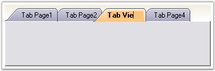
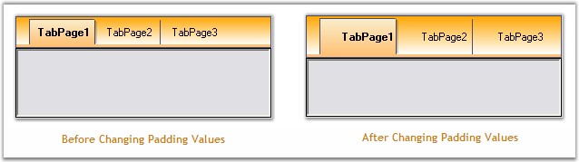

TabItems can be customized
using the properties given below.
Renaming TabItems
TabControlAdv comes with the renaming functionality similar to MS Excel. Users can edit TabControlAdv's text at run-time using the LabelEdit property which has to be set to True.
|
TabControlAdv Property |
Description |
|
LabelEdit |
Specifies whether the text of the tabitem is editable. Default value is False. |
To bring the text of the tabitem to the edit mode, the following can be done.
· Select the text of the tabitem to be edited and right-click on the tab to bring the text to edit mode. The text can now be edited and it can be saved by pressing the Return key.
· Also, double-clicking on a tab makes the text change to edit mode.

Figure 1038: Renaming the Tab Item
After editing the text, to come out of the edit mode, press the Enter key or click the Left Mouse button.
· Programmatically the LabelEdit property can be set as follows.
|
[C#]
// Renaming TabControlAdv’s Text. this.tabControlAdv.LabelEdit = true; |
|
[VB.NET]
' Renaming TabControlAdv’s Text. Me.tabControlAdv.LabelEdit = True |
 Note: The visibility of the tab items can be
set through TabVisible property. It can be enabled / disabled using TabEnabled
property.
Note: The visibility of the tab items can be
set through TabVisible property. It can be enabled / disabled using TabEnabled
property.
Moving TabItems
The order of the tabs within the TabControlAdv can be changed at design-time and also at run-time by simply dragging-and-dropping the tabs in the required places. This can be enabled using the UserMoveTabs property.
|
[C#]
this.tabControlAdv1.UserMoveTabs = true; |
|
[VB.NET]
Me.tabControlAdv1.UserMoveTabs = True |
Padding
Using the Padding property, the space around the text / image of the tabitems can be changed by settings the X-axis and Y-axis values.
Code snippets to set the Padding
|
[C#]
// Setting the Padding for TabControlAdv through Coding. this.tabControlAdv1.Padding = new Point(12, 12); |
|
[VB.NET]
'Setting the Padding for TabControlAdv through Coding. Me.tabControlAdv1.Padding = New Point(12, 12) |

Figure 1039: Padding set for the Tab Items in the TabControlAdv
Note: The
TabControlAdv.OnTabPanelBoundsAffected() method forces the TabControlAdv to
re-layout it's elements.